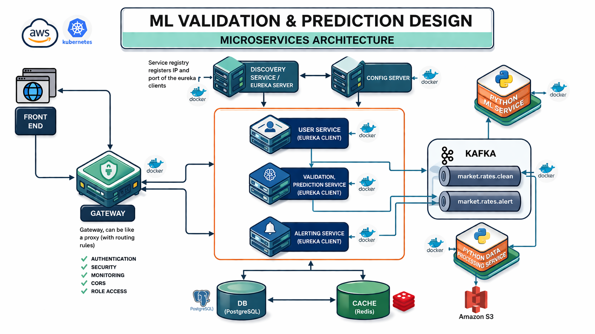
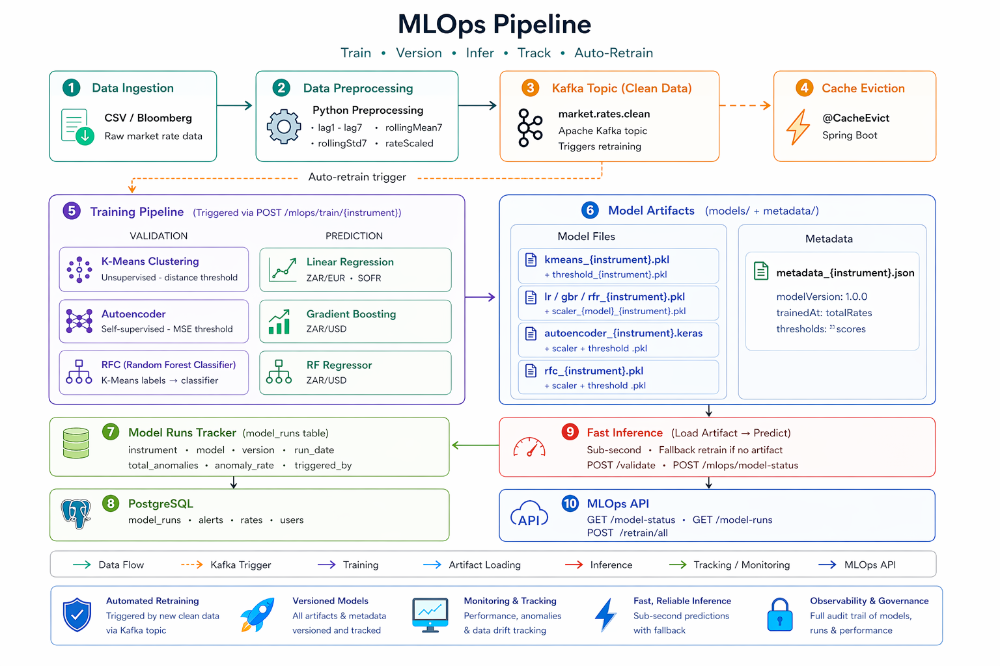
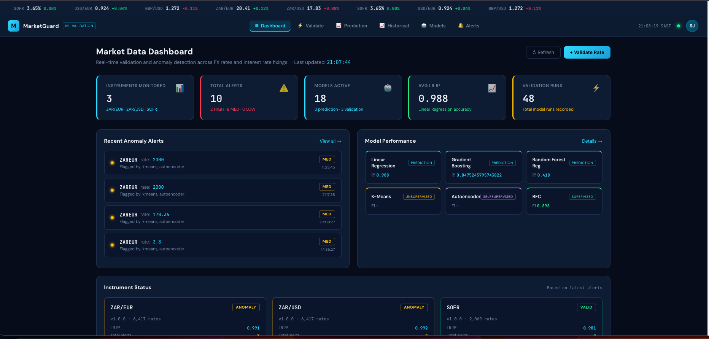
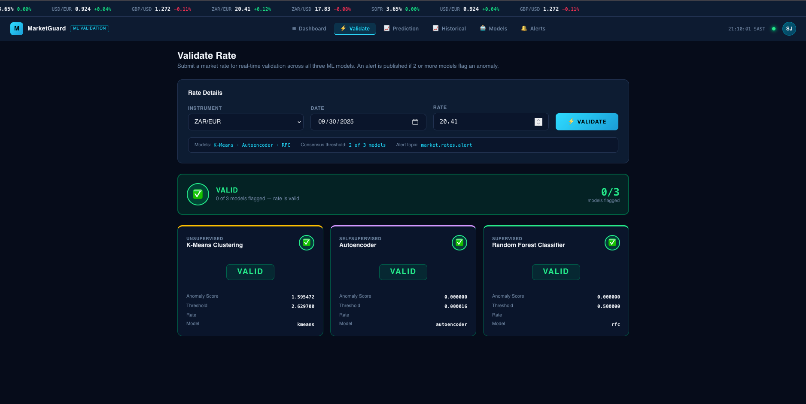

What I built, what broke, and what I’d tell you to learn.
Seven services. Java Spring Boot for orchestration and business logic, Python FastAPI for the models, React for the interface, Kafka between them, PostgreSQL underneath.

Each clean record carries its derived values already computed:
| Training | Serving | |
|---|---|---|
| When | On new data arriving, or on demand | Every request |
| Cost | Seconds to minutes, full history | Must be milliseconds |
| Output | Artefact on disk plus a metadata file | An answer |
| Reads | The database | The artefact |

| Service | Jobs | Duration |
|---|---|---|
| React frontend | Build and push → update manifest | 4m 42s |
| Spring Boot service | Build JAR → build and push → update manifest | 1m 47s |
| Python ML service | Lint gate → build and push | 15m 54s |


What to learn, what to build, and how to talk about it.
| Data engineering | Data science | |
|---|---|---|
| Optimises for | Correctness, reliability, cost | Insight, inference, decisions |
| Day to day | Pipelines, schemas, orchestration, on-call | Questions, models, analysis, communication |
| Judged on | Did the data arrive, correct and on time | Was the conclusion right and did it change anything |
| Shared | SQL, Python, version control, and a great deal of “is this number actually right?” | |
Happy to share the architecture diagrams, or look at your project repository if that would help.